library(igraph)
library(ggsem)
set.seed(2026)
# Create a sample ring graph
g <- make_ring(10)
# Verify object class
class(g) # Returns "igraph"[1] "igraph"The ggsem package also provides direct integration with multiple network object types, allowing you to launch the application with pre-loaded models and visualizations. Here, I demonstrate how one object can be pre-loaded before launching the app. If you are interested in pre-loading multiple objects, see the next section of the book.
If you want to modify aesthetics using interactive parameter visualization (dynamic dropdown of all nodes and edges etc), then you should pre-load output objects from other packages into ggsem.
For all, object argument must be specified to either igraph, qgraph or network object, with no model argument in ggsem().
igraph objectsThe ggsem package provides support for igraph objects for plotting networks.
Load igraph networks directly into ggsem for interactive visualization and customization:
library(igraph)
library(ggsem)
set.seed(2026)
# Create a sample ring graph
g <- make_ring(10)
# Verify object class
class(g) # Returns "igraph"[1] "igraph"# Import directly into ggsem
ggsem(object = g, width = 35, height = 35)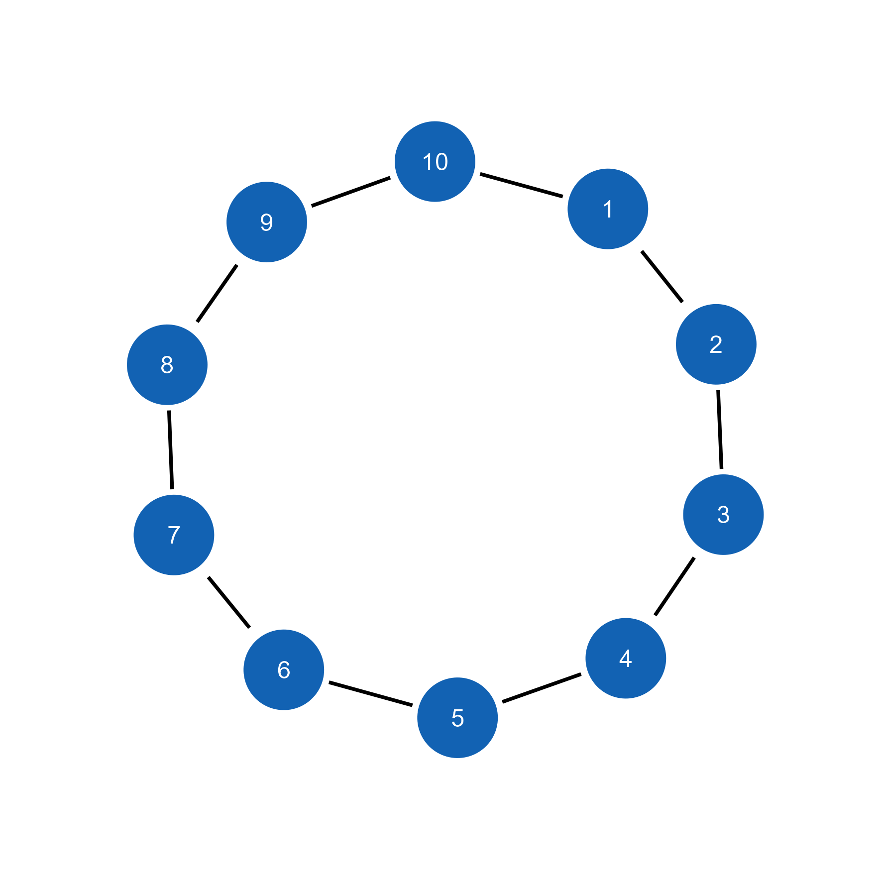
# Create a weighted network with clear community structure
set.seed(123)
weighted_g <- sample_sbm(
n = 12,
pref.matrix = matrix(c(0.8, 0.1, 0.1, 0.8), nrow = 2),
block.sizes = c(6, 6),
directed = FALSE
)
# Add edge weights
E(weighted_g)$weight <- round(runif(ecount(weighted_g), 0.1, 1), 2) # limit decimal places, otherwise they clutter the overall visuals
plot(weighted_g)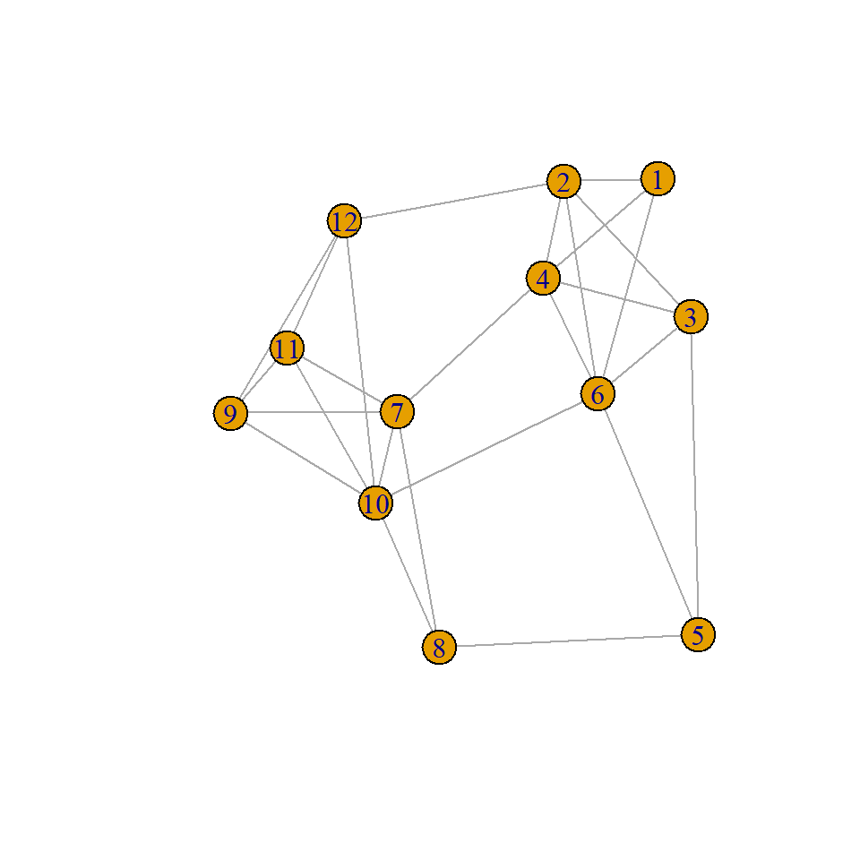
# Import for interactive refinement
ggsem(object = weighted_g, width = 45, height = 45)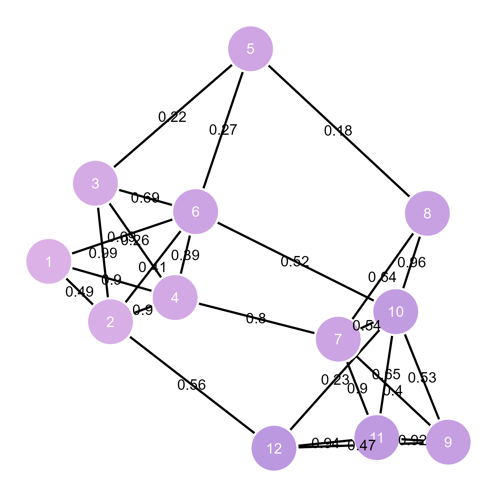
You can also match the layout across network diagrams in the ggsem app.
library(igraph)
library(ggsem)
set.seed(2025)
# Same 5 researchers across all time points
nodes <- data.frame(id = 1:5, name = c("Alice", "Bob", "Charlie", "Diana", "Eve"))
# Time 1: Early collaborations (2018-2019)
edges_t1 <- data.frame(
from = c(1, 1, 2, 3, 4),
to = c(2, 3, 3, 4, 5),
weight = c(2, 1, 1, 1, 1),
year = "2018-2019"
)
# Time 2: Growing collaborations (2020-2021)
edges_t2 <- data.frame(
from = c(1, 1, 2, 2, 3, 4, 4),
to = c(2, 3, 3, 4, 4, 5, 1),
weight = c(4, 3, 2, 2, 3, 2, 1),
year = "2020-2021"
)
# Time 3: Established network (2022-2023)
edges_t3 <- data.frame(
from = c(1, 1, 2, 2, 3, 3, 4, 4, 5),
to = c(2, 3, 3, 4, 4, 5, 5, 1, 2),
weight = c(7, 5, 4, 3, 5, 3, 4, 2, 2),
year = "2022-2023"
)
# Create three separate igraph objects
g1 <- graph_from_data_frame(edges_t1, vertices = nodes, directed = FALSE)
g2 <- graph_from_data_frame(edges_t2, vertices = nodes, directed = FALSE)
g3 <- graph_from_data_frame(edges_t3, vertices = nodes, directed = FALSE)
fixed_layout <- layout_nicely(g3)
par(mfrow = c(1, 3))
plot(g1, layout = fixed_layout, main = "Time 1: 2018-2019",
edge.width = E(g1)$weight, edge.label = E(g1)$weight)
plot(g2, layout = fixed_layout, main = "Time 2: 2020-2021",
edge.width = E(g2)$weight, edge.label = E(g2)$weight)
plot(g3, layout = fixed_layout, main = "Time 3: 2022-2023",
edge.width = E(g3)$weight, edge.label = E(g3)$weight)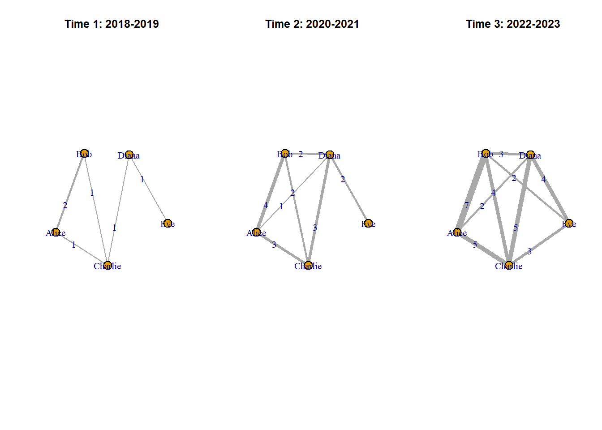
# Import for interactive refinement
ggsem_builder() |>
add_group("First", object = g1, x = -40, width = 25, height = 25) |>
add_group("Second", object = g2, x = 0, width = 25, height = 25) |>
add_group("Third", object = g3, x = 40, width = 25, height = 25) |>
launch()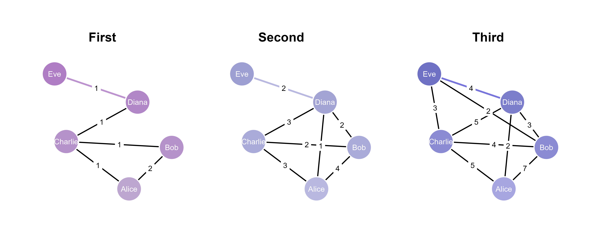
# Method 1: From bipartite adjacency matrix
mat <- matrix(c(1,0,1,1,0,1,0,1,0,1), nrow = 2, byrow = TRUE)
bipartite_g <- graph_from_incidence_matrix(mat)
# Method 2: Explicit type attribute specification
bipartite_g <- make_full_bipartite_graph(3, 2) # 3 nodes of type1, 2 nodes of type2
V(bipartite_g)$type <- rep(c(TRUE, FALSE), times = c(3, 2)) # TRUE for first partition, FALSE for second
plot(bipartite_g)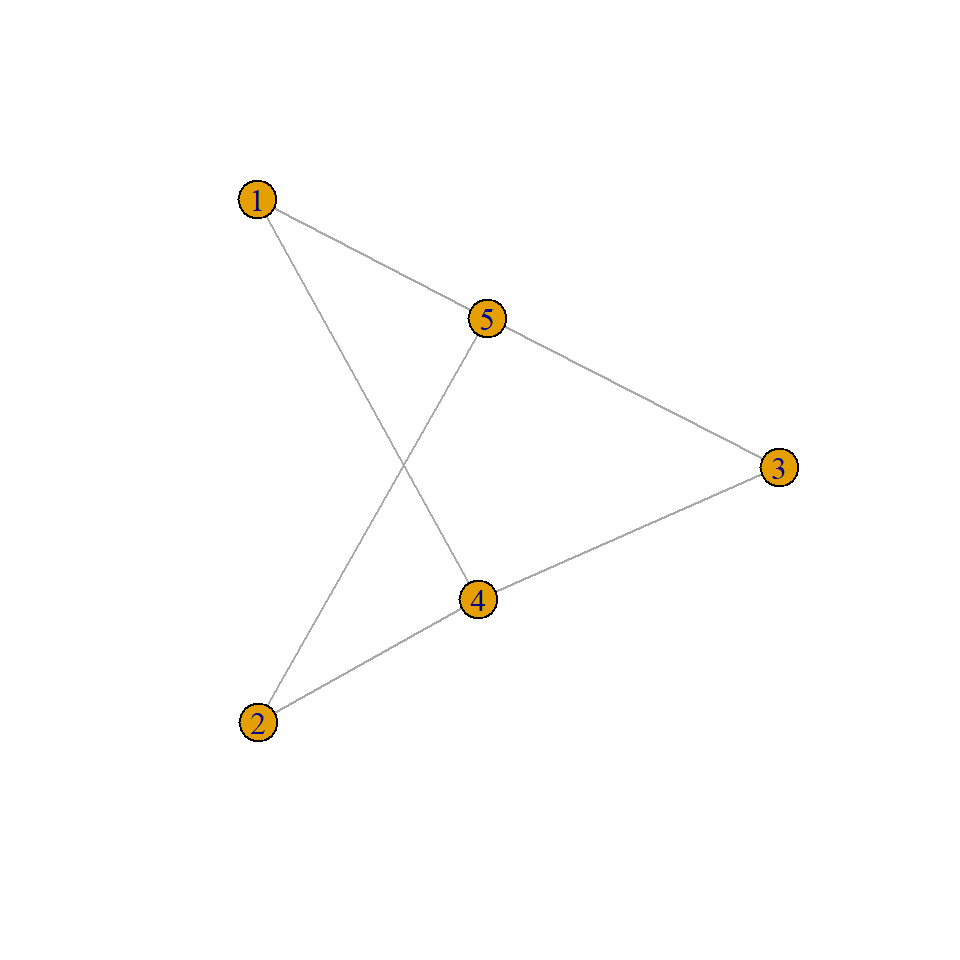
# Import to ggsem with bipartite structure
ggsem(object = bipartite_g)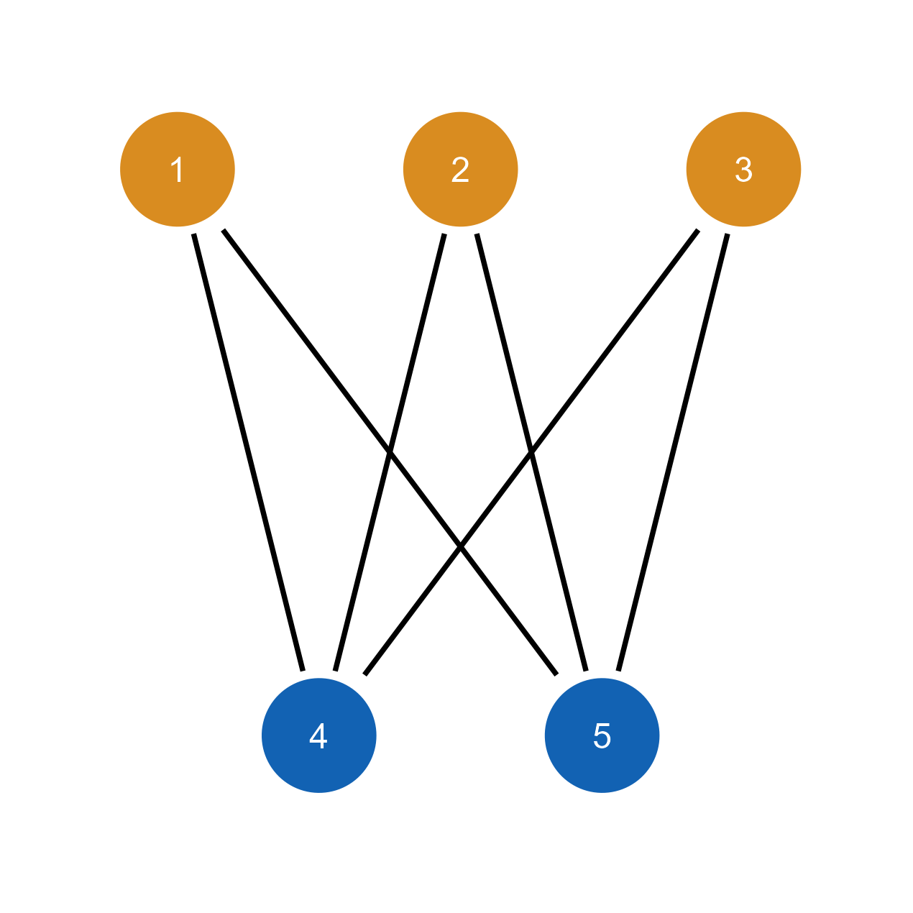
Vertex attributes: names, groups, centrality measures
Edge attributes: weights, types, directions
Graph structure: community detection, clustering coefficients
Layout information: when specified in igraph
Bipartite structure: type attributes and two-mode organization
Vertex types and partition membership automatically detected
Bipartite layout maintained with clear separation between partitions
Type-based coloring options for different entity classes in the app
# Use igraph's layout algorithms
set.seed(2026)
g <- make_star(10)
# Calculate layout in igraph
layout_ig <- layout_with_fr(g)
plot(g)
# Import to ggsem with layout preserved
ggsem(object = g, width = 35, height = 35) # Layout automatically transferredWhile the individual node’s location may differ due to differences in random seeds between inside and outside the ggsem app, the overall layout is preserved.
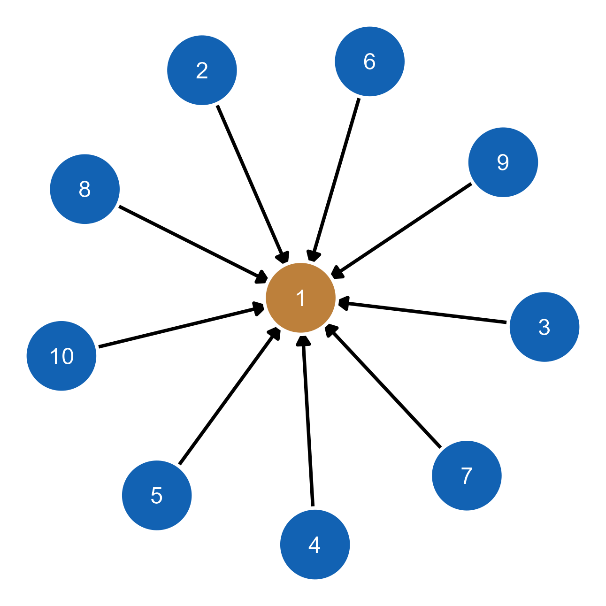
# Edge weights automatically inform visualization
weighted_net <- make_full_graph(5)
E(weighted_net)$weight <- c(1, 2, 3, 4, 5, 3, 2, 4, 1, 5)
plot(weighted_net)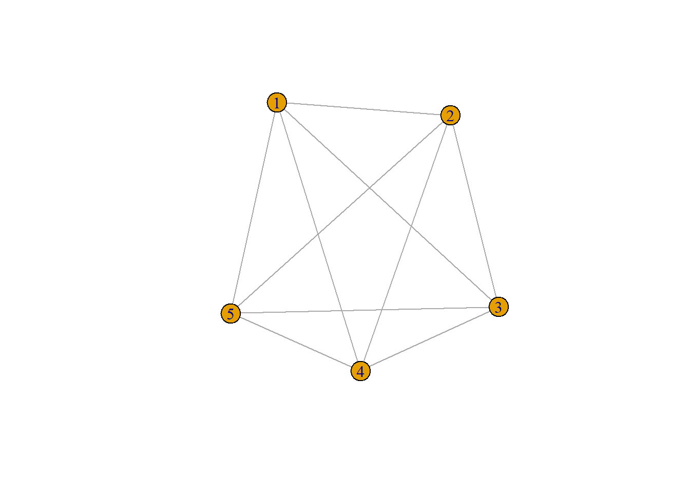
# In ggsem: weights can control edge width, color, or transparency
ggsem(object = weighted_net, width = 35, height = 35)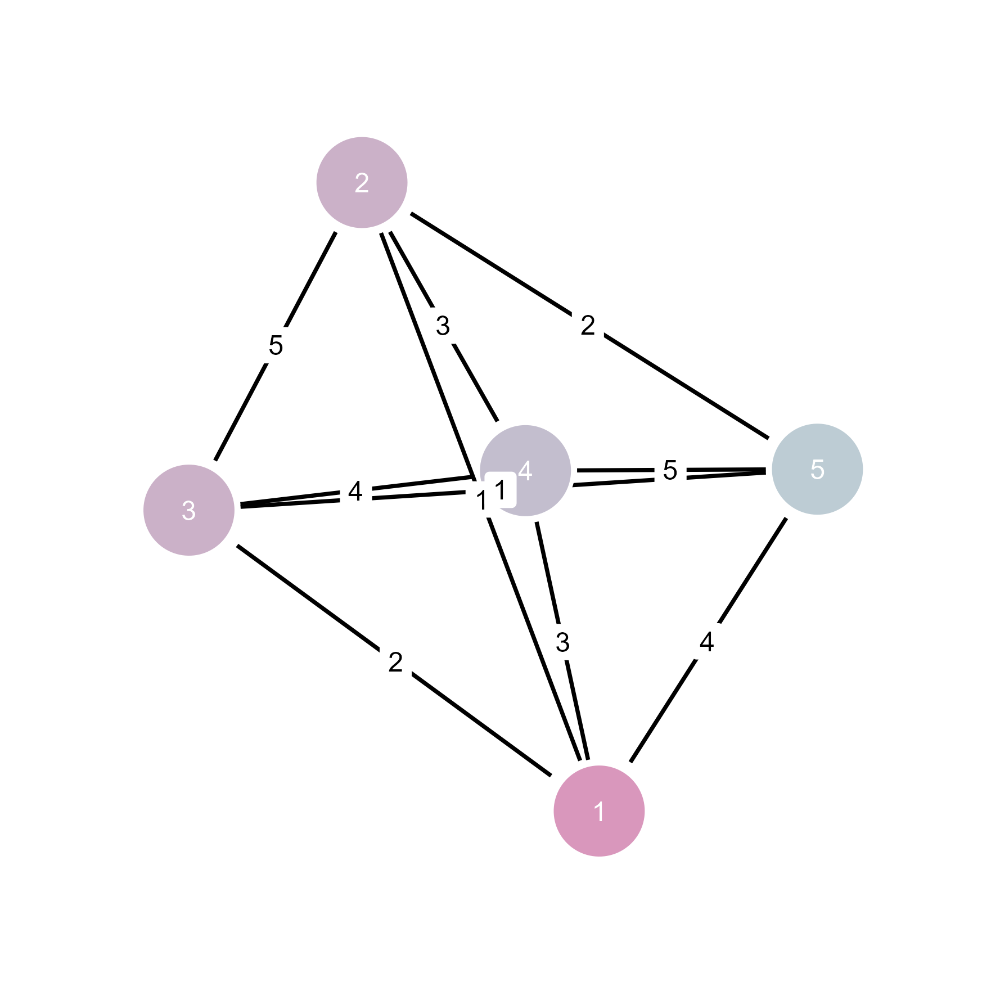
Weights information is inherited by ggsem.
# Complete network analysis workflow
set.seed(123)
g <- sample_pa(20, power = 1.2, m = 2) # Preferential attachment
# Analytical steps in igraph
V(g)$degree <- degree(g)
V(g)$betweenness <- betweenness(g)
communities <- cluster_walktrap(g)
V(g)$community <- communities$membership
plot(g)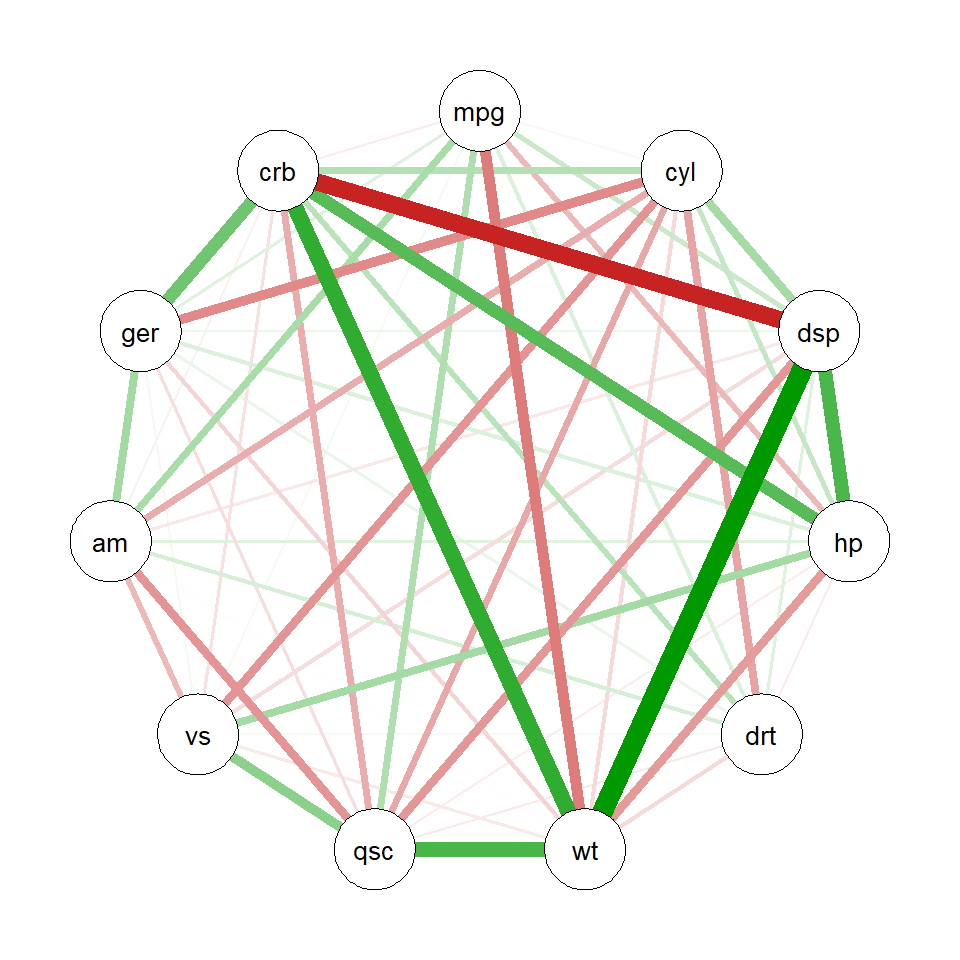
# Interactive refinement in ggsem
ggsem(object = g, width = 45, height = 45)
You can perform clustering by assigning unique color to each cluster of the nodes because g contains information about community.
qgraph network objectsAdditionally, the ggsem package provides support for qgraph objects for plotting networks.
qgraph Network ImportLoad qgraph network objects directly into ggsem. Make sure to specify type argument as network.
library(qgraph)
library(ggsem)
# Create correlation network from mtcars data
cor_matrix <- cor(mtcars)
qgraph_net <- qgraph(cor_matrix, graph = "pcor")
class(qgraph_net) # class of the object[1] "qgraph"# Import directly into ggsem
ggsem(object = qgraph_net, type = 'network')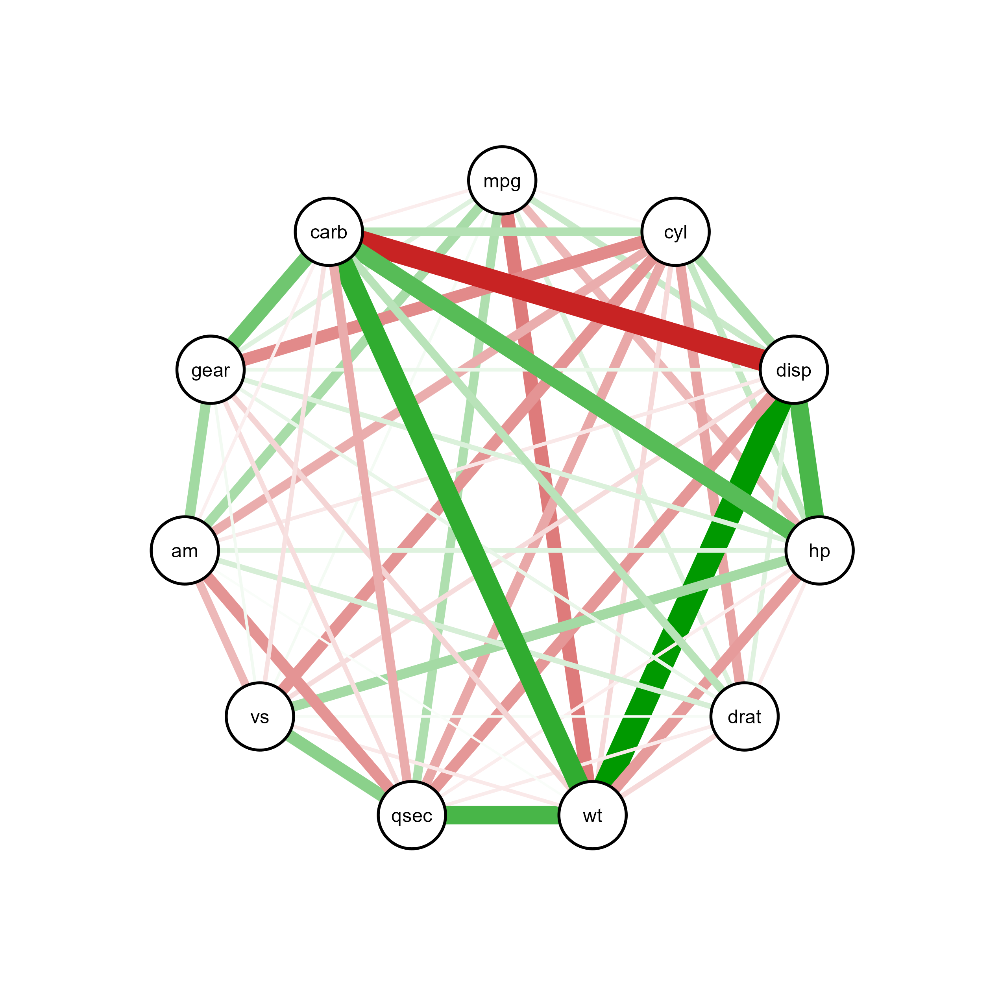
Through interactive parameter visualization, you can modify properties of a specific node, edge or label:
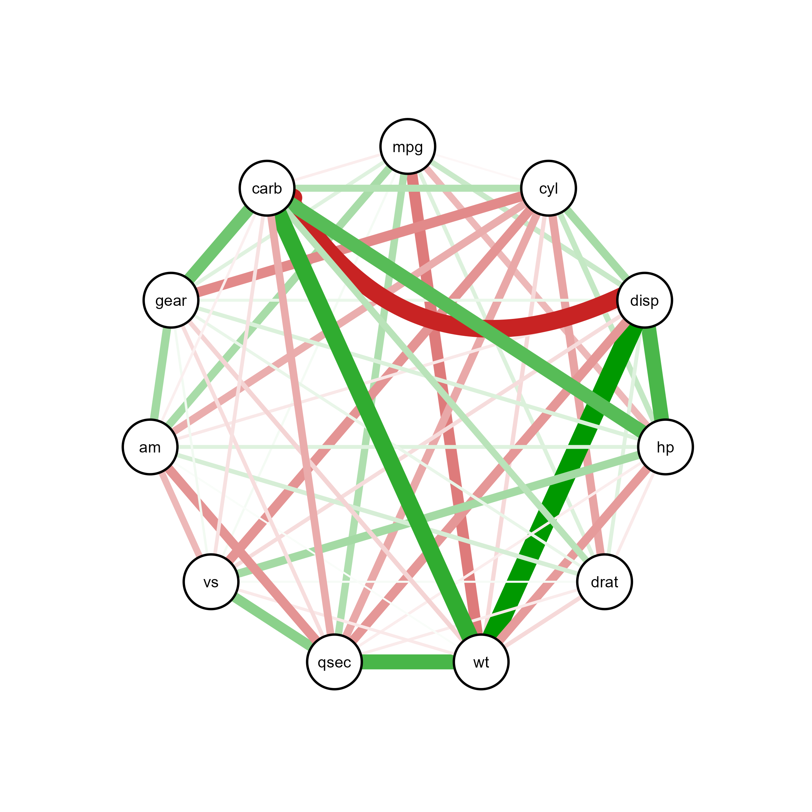
qgraph Network Examples# Correlation network with edge thresholding
cor_matrix <- cor(mtcars)
qgraph_net <- qgraph(cor_matrix,
graph = "cor",
minimum = 0.5, # Hide edges below this threshold
maximum = 1, # Upper threshold
layout = "spring",
edge.width = 2,
label.cex = 0.8,
labels = colnames(mtcars))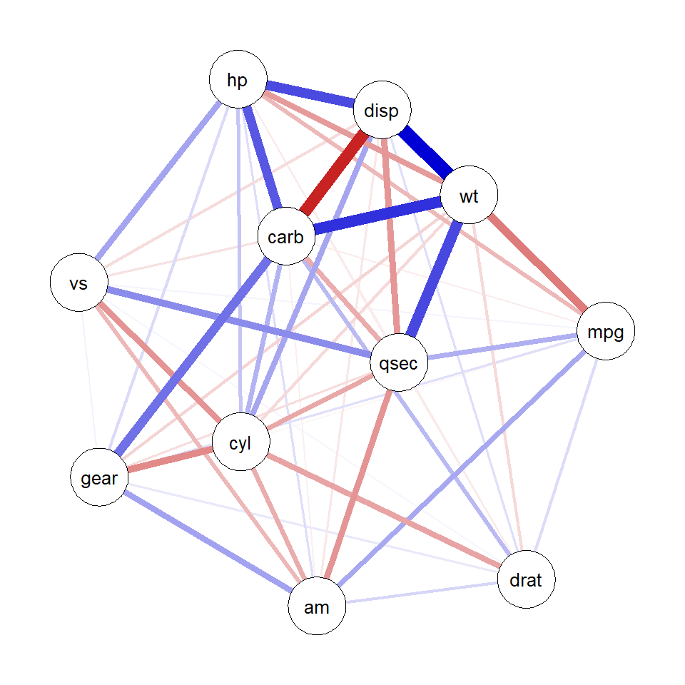
ggsem(object = qgraph_net, type = 'network')
# Partial correlation network controlling for other variables
qgraph_net <- qgraph(cor_matrix,
graph = "pcor", # Partial correlations
layout = "spring",
sampleSize = nrow(mtcars), # Important for pcor calculations
labels = colnames(mtcars),
theme = "colorblind")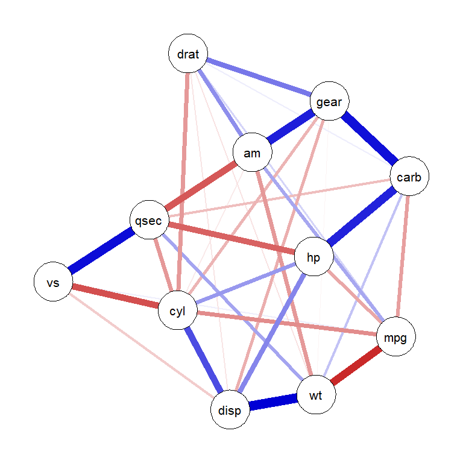
plot(qgraph_net)ggsem(object = qgraph_net, type = 'network')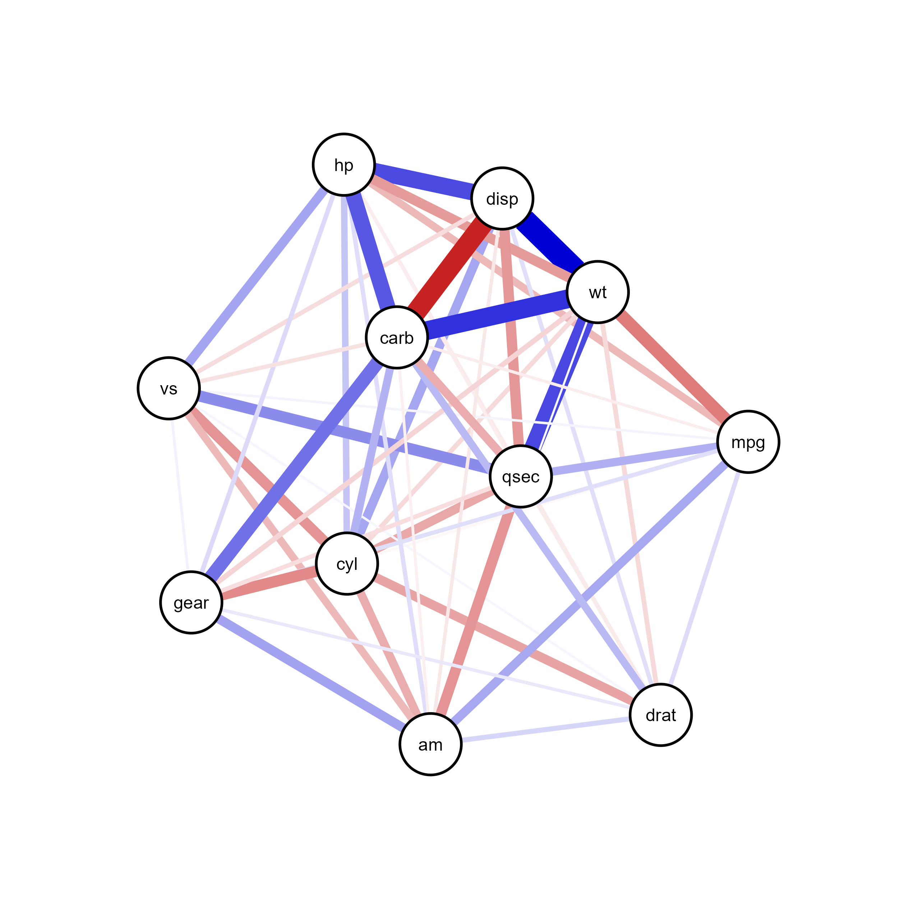
# Regularized partial correlation network using graphical lasso
qgraph_net <- qgraph(cor_matrix,
graph = "glasso",
layout = "spring",
sampleSize = nrow(mtcars), # Required for glasso estimation
tuning = 0.5, # Regularization parameter
labels = colnames(mtcars),
theme = "colorblind")Warning in EBICglassoCore(S = S, n = n, gamma = gamma, penalize.diagonal =
penalize.diagonal, : A dense regularized network was selected (lambda < 0.1 *
lambda.max). Recent work indicates a possible drop in specificity. Interpret
the presence of the smallest edges with care. Setting threshold = TRUE will
enforce higher specificity, at the cost of sensitivity.
plot(qgraph_net)ggsem(object = qgraph_net, type = 'network')
qgraph FeaturesEdge weights and correlation values
Node positions from qgraph layout algorithms
Color schemes for nodes and edges
Thresholding and filtering settings
Edge labels and correlation coefficients
Spring, circle, and other qgraph layouts are maintained
Node positioning transferred accurately to ggsem
Option to further refine layout interactively in ggsem
ggsem does not create legend.network ObjectsFinally, the ggsem package provides support for network objects for plotting networks.
Load network objects directly into ggsem:
library(network)
'network' 1.18.2 (2023-12-04), part of the Statnet Project
* 'news(package="network")' for changes since last version
* 'citation("network")' for citation information
* 'https://statnet.org' for help, support, and other information
Attaching package: 'network'The following objects are masked from 'package:igraph':
%c%, %s%, add.edges, add.vertices, delete.edges, delete.vertices,
get.edge.attribute, get.edges, get.vertex.attribute, is.bipartite,
is.directed, list.edge.attributes, list.vertex.attributes,
set.edge.attribute, set.vertex.attributelibrary(ggsem)
# Create a simple network object
net <- network.initialize(10) # 10 nodes
network::add.edges(net, tail = 1:9, head = 2:10) # Create a chain
network.vertex.names(net) <- letters[1:10]
class(net) # Returns "network"[1] "network"plot(net)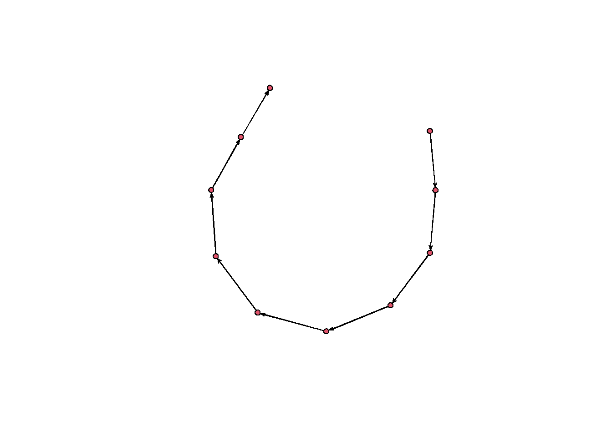
# Import directly into ggsem
ggsem(object = net, width = 35, height = 35)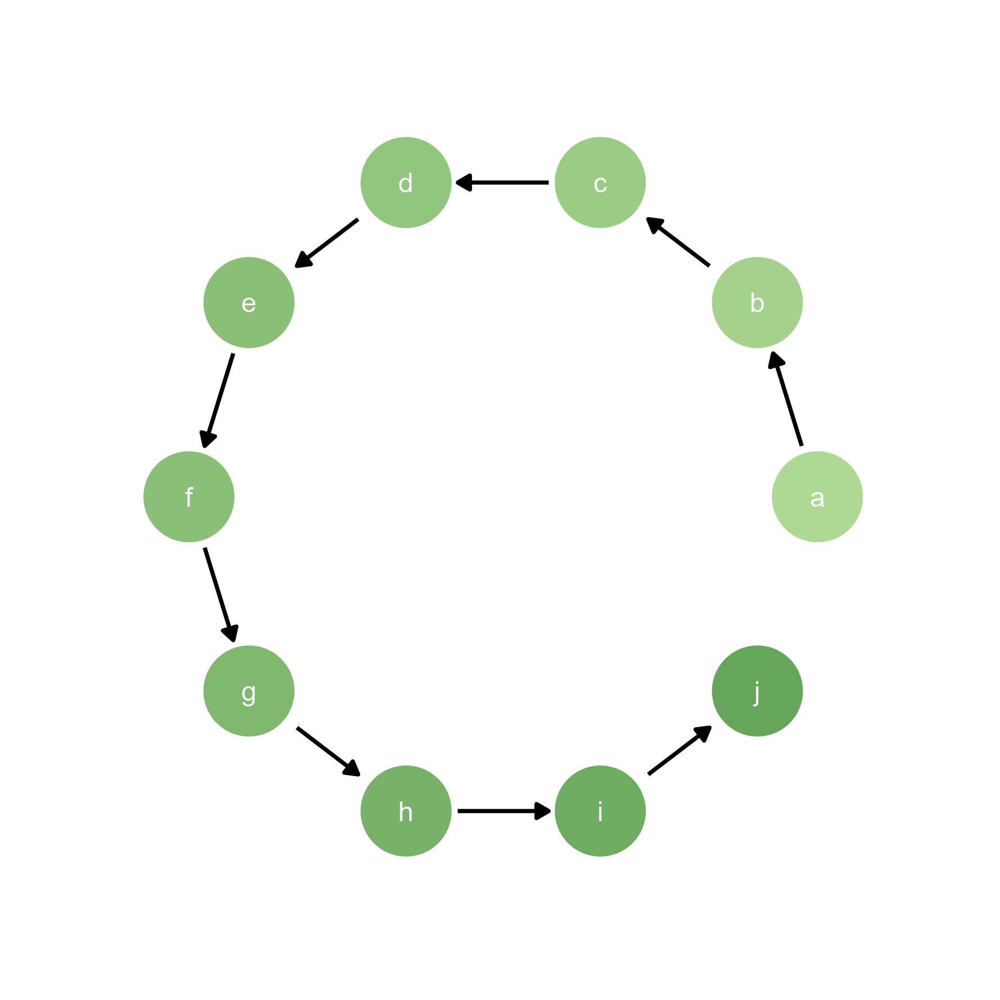
Create and import bipartite network objects with explicit partition structure:
# Initialize network with 7 nodes (bipartite=3 means first 3 are type 0)
net <- network.initialize(7, bipartite = 3, directed = FALSE)
# Add edges (from type 0 to type 1)
network::add.edges(net, tail = c(1, 1, 2, 2, 3, 3),
head = c(4, 5, 5, 6, 6, 7))
# Set node names
network.vertex.names(net) <- c(1, 2, 3, "A", "B", "C", "D")
# Create layout coordinates (two columns)
x_pos <- c(rep(1, 3), rep(2, 4)) # First set at x=1, second at x=2
y_pos <- c(3:1, 4:1) # Spread vertically (adjust for spacing)
# Plot with base R
par(mar = c(1, 1, 3, 1)) # Adjust margins
plot(net,
coord = cbind(x_pos, y_pos), # Our bipartite layout
vertex.col = c(rep("lightblue", 3), rep("salmon", 4)), # Color by set
vertex.cex = 3,
vertex.border = "gray20",
vertex.sides = c(rep(50, 3), rep(4, 4)), # Circles and squares
edge.col = "gray50",
edge.lwd = 2,
displaylabels = TRUE,
label.pos = 5, # Labels above nodes
label.cex = 1.2,
main = "Bipartite Network (Base R)")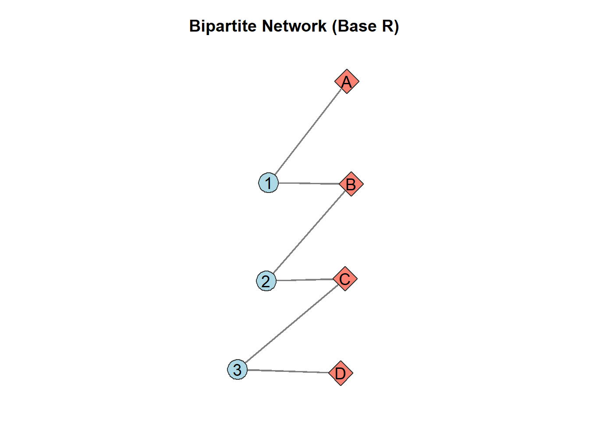
# Import bipartite network to ggsem
ggsem(object = net)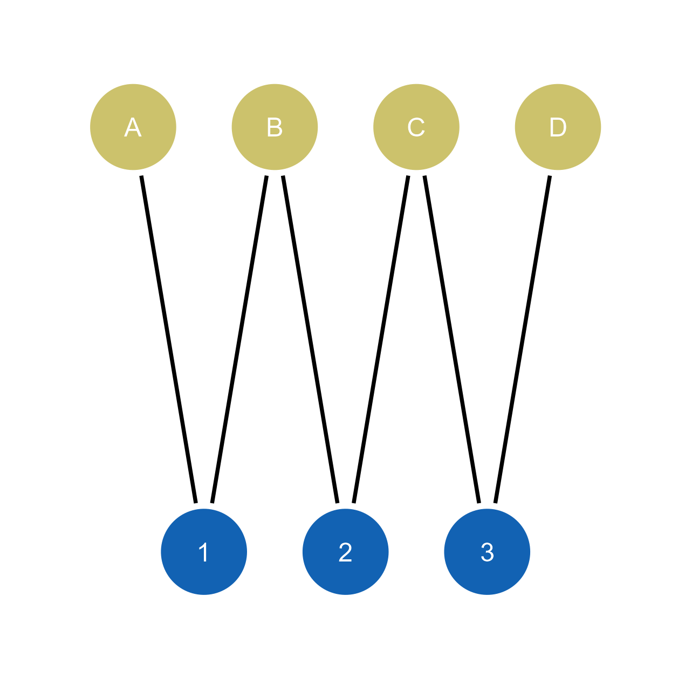
Social Network Analysis
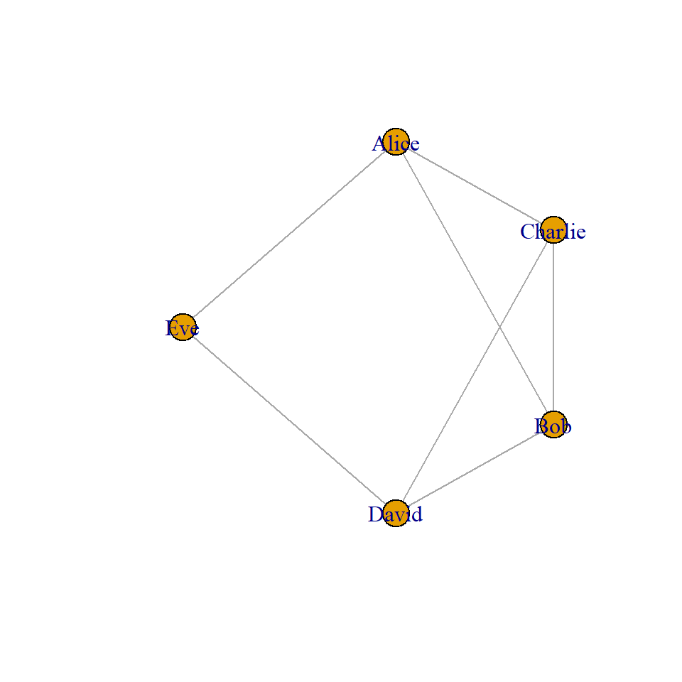
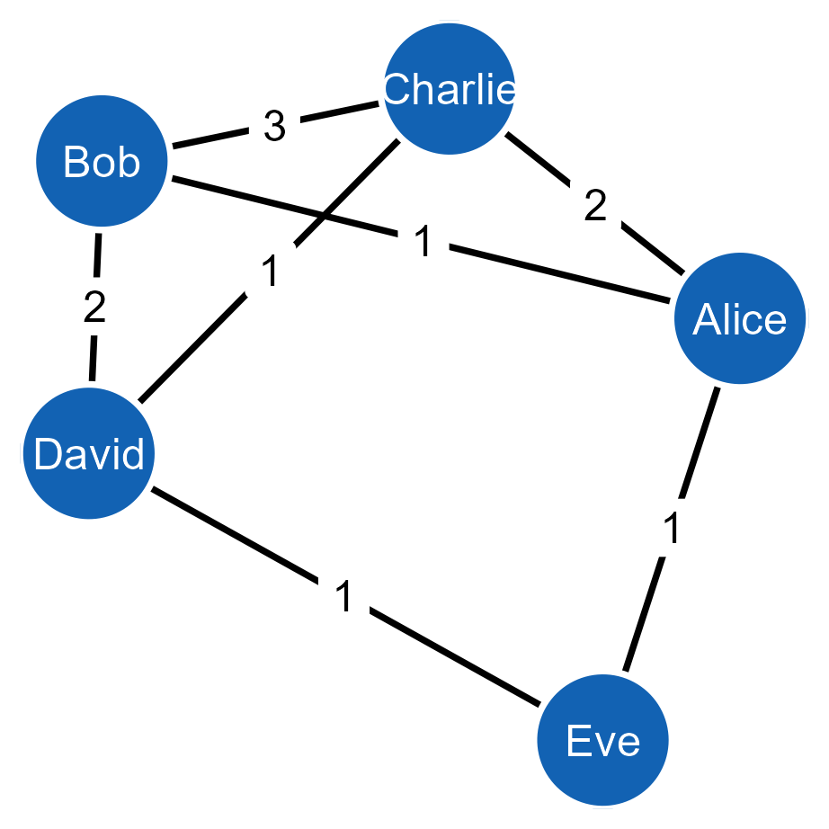